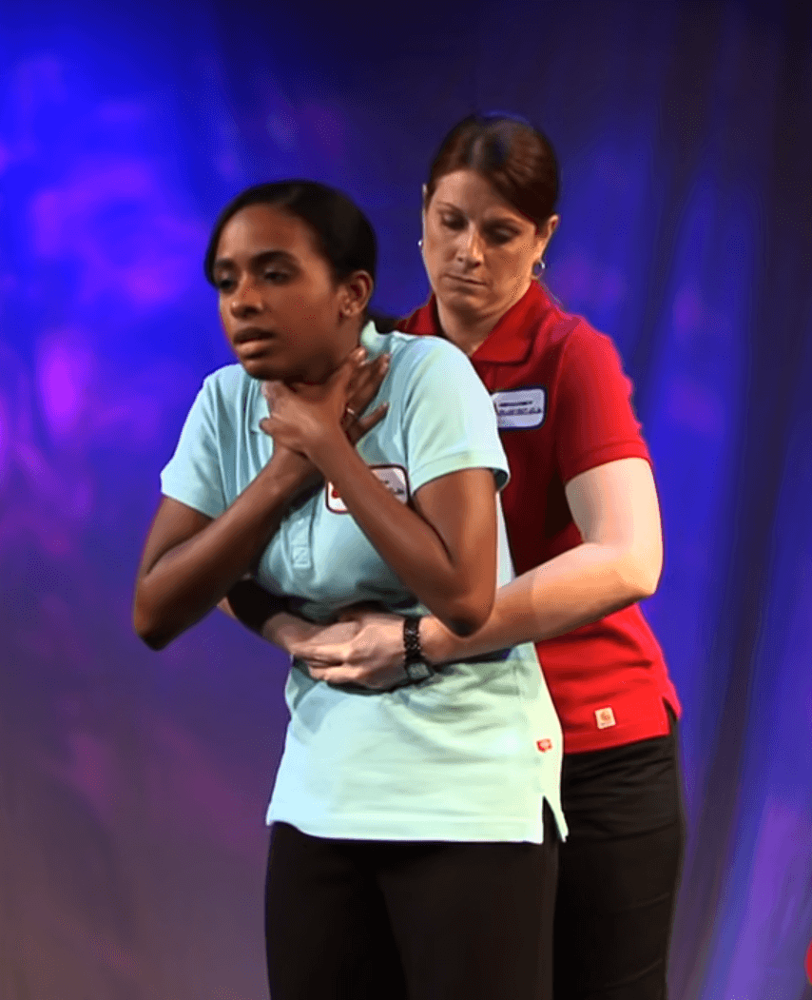

Today, we will learn...
Heimlich Maneuver
A person who is choking cannot speak, cough, or breathe. The Heimlich maneuver can help to expel the object
obstructing the person's airway.
1
Starting Position
Stand behind the person. If it is a child, kneel behind them.
Place one foot forward to maintain balance. Then, encircle the person's waist with your arms and lean their
body slightly forward.

2
Fist above the navel
Close one hand into a fist and place it just above the person's navel.

3
Grasp the fist and apply pressure
Now, grasp that fist with your other hand. In the abdominal area, perform a swift upward thrust as if you were
trying to lift the person. If it's a child, press gently but firmly to avoid harming internal organs.

4
Repeat if necessary
Perform a cycle of five abdominal compressions followed by five back blows. Repeat until the obstruction
clears or the person loses consciousness.
In pregnant women, use chest compressions. Place the fist just above the sternum and perform upward
compressions to clear the airway.
Keep in mind that...
If, despite your efforts, the obstruction does not clear, and the person goes into cardiac arrest, begin
cardiopulmonary resuscitation (CPR) immediately to maintain blood flow and vital functions until emergency
services arrive. Knowledge of CPR is essential and can be critical in these situations.